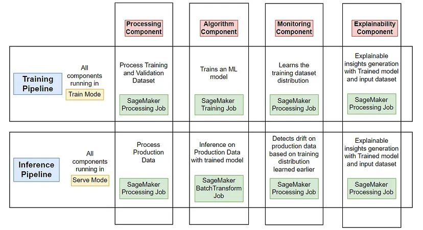
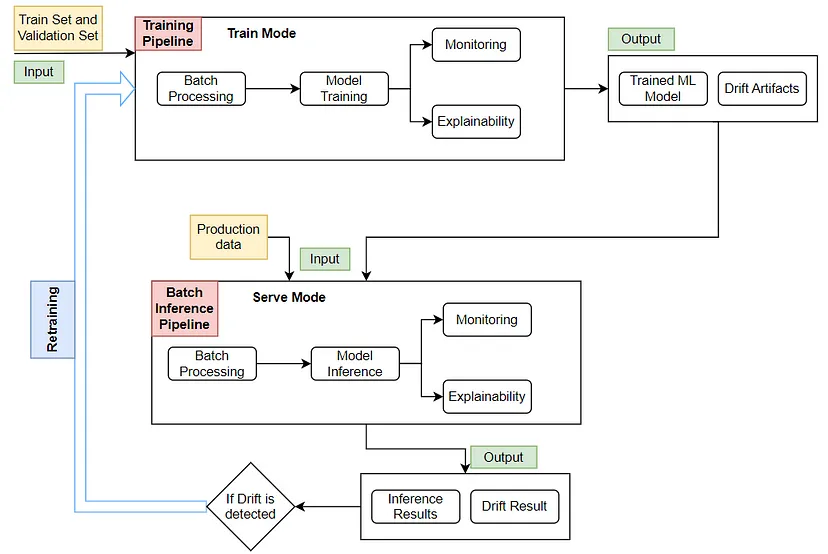
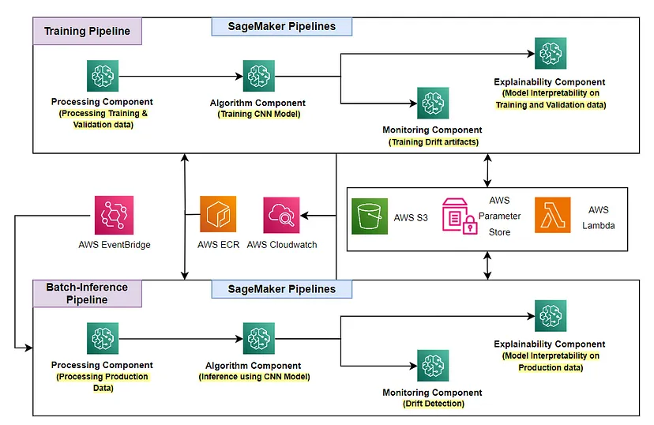

End-to-End MLOps on AWS: Blog Series #
Last Edit Date: December 26, 2023
- I had co-authored 3 blogs out of 7 blogs in total on the topic: “End-to-End MLOps on AWS”.
- The blog series is hosted on Quantiphi’s Medium Account
Other than Quantiphi’s Medium account, the blogs are also hosted seperately on github as follows:
https://sagemaker-mlops-samples.github.io/ #
Authors of the below 3 blogs:
-
Palash Nimodia (Architect — Machine Learning)
-
Yogendra Yatnalkar (Senior Machine Learning Engineer) at Quantiphi
1. Introducing End-to-End MLOps on AWS: Part1 #

2. End-to-End MLOps on AWS: Part2.1 - Computer Vision Simulation with Drift & Retraining #

3. End-to-End MLOps on AWS: Part2.2 - Computer Vision Components and Pipelines Deep Dive #
